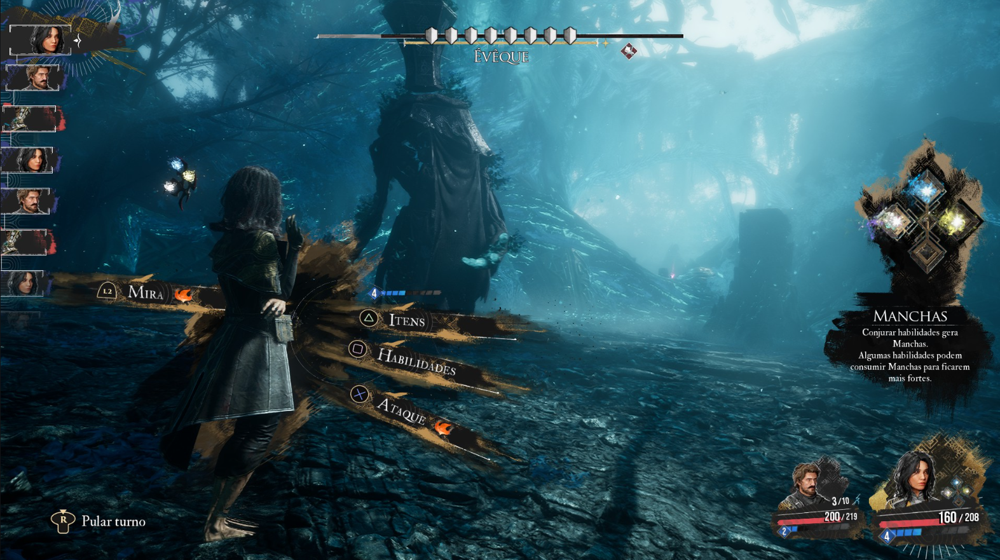
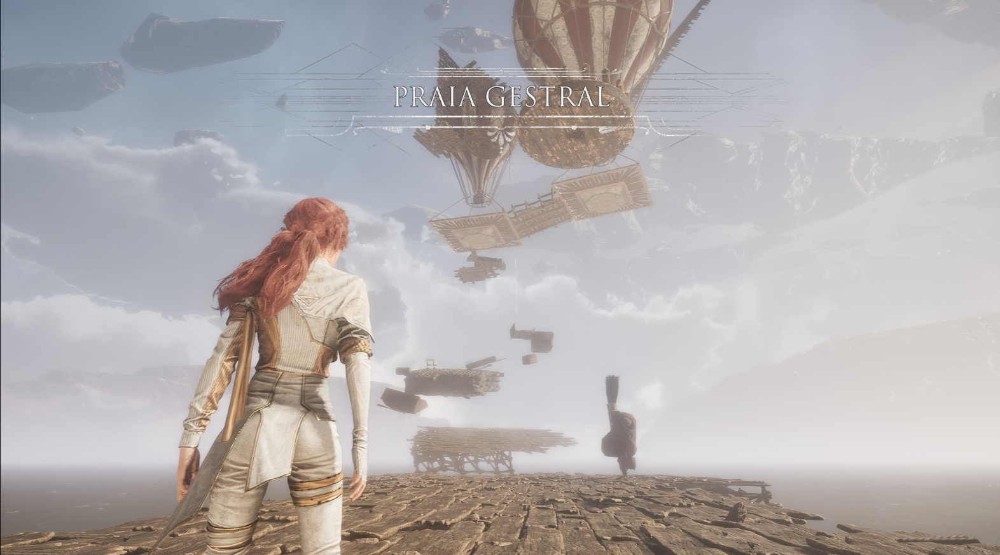
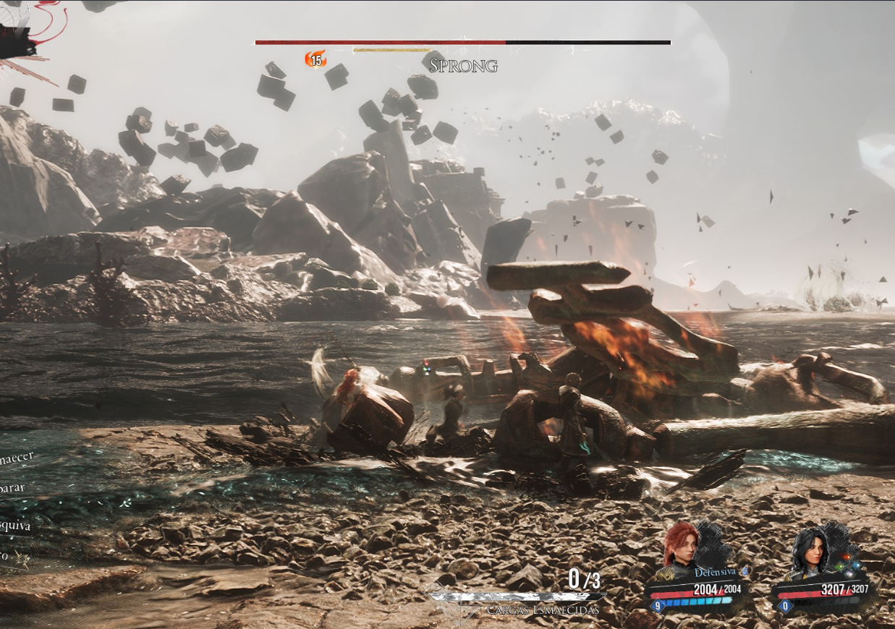
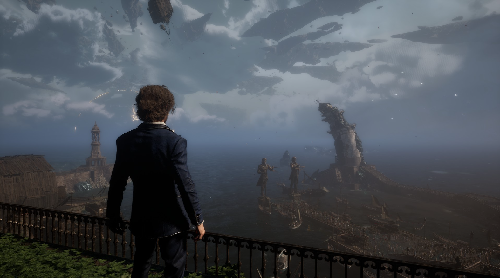
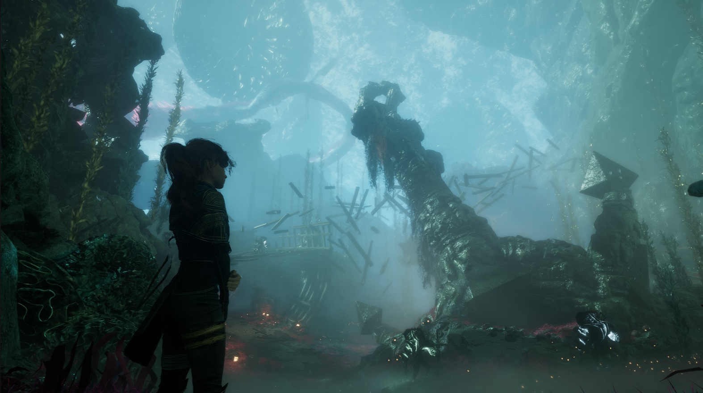
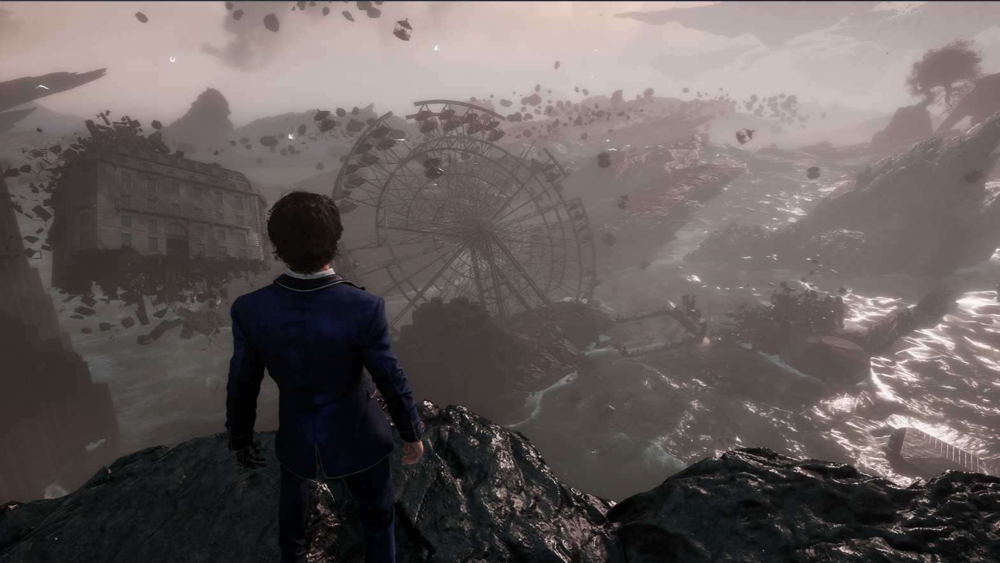
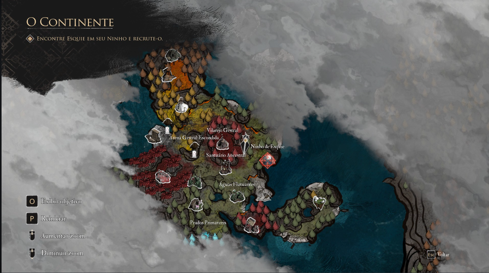
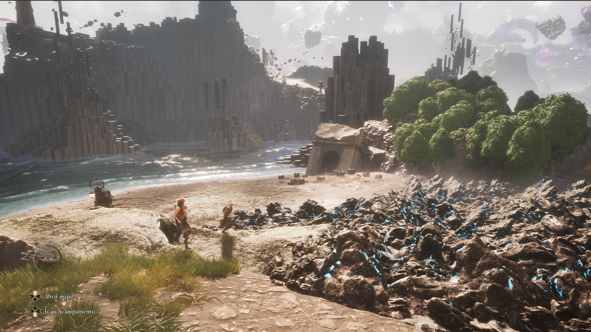
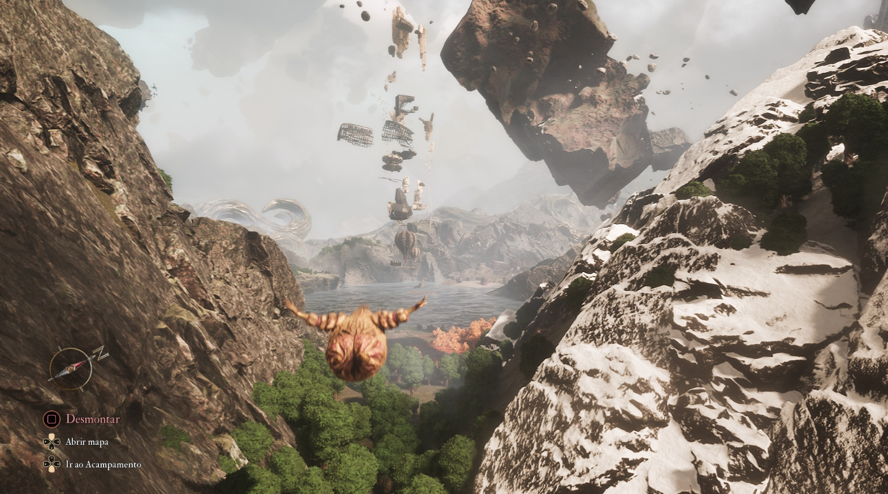

Clair Obscur: Expedition 33
Desenvolvedor(a): Sandfall Interactive
Publicadora: Kepler Interactive
Gênero: RPG de Turno/Aventura
Engine: Unreal Engine 5
Plataformas: Microsoft Windows, PS5 e Xbox X/S
Data de Lançamento: 21/04/2025
Introdução
Sinopse:Conduza os membros da Expedição 33 em uma missão para destruir a Artífice para que ela nunca mais possa pintar a morte. Explore um mundo inspirado na Belle Époque da França e enfrente inimigos únicos neste RPG em turnos com mecânicas em tempo real.
Confesso que fiquei interessado nesse jogo desde a primeira vez que o vi em um trailer na Gamescom da Microsoft. É um estúdio indie francês que fez parceria com o Game Pass e conseguiu lançar um excelente jogo. Vou comentar aqui quais são as qualidades deste jogo.
Mecânica
O jogo é, literalmente, um RPG de batalhas por turno. Acredito que a principal inovação, pelo menos para mim, foi o sistema de "bloquear" ou "escapar" dos ataques: o próprio jogador realiza essa ação em tempo real, diferente de outros RPGs de turno em que esquivar depende apenas da sorte. Isso torna o jogo um pouco mais difícil, mas também mais justo — se você defende no momento certo, evita dano e ainda contra-ataque ao inimigo e ganha ainda um PA(Pontos de Ação, já que o jogo não usa sistema de mana).Lendo isso faz parecer que o jogo obriga o jogador a bloquear, e sim é verdade, porem na batalha o jogo te dá algumas dicas no momento certo para bloquear e não é tão difícil, algum monstro só tem dois ou três tipos de ataques e fica fácil de decora.
Gostei bastante dessa proposta. Também me diverti grindando XP — e sim, o jogo permite grindar para ficar mais forte. A cada nível que você sobe, ganha 3 pontos para distribuir nos atributos do personagem, o que facilita bastante a evolução.
Outro detalhe legal é que o jogo possui minigames divertidos. A imagem abaixo mostra aquele que, provavelmente, será o minigame mais famoso: uma versão "Only Up" dentro de Expedition 33.
Sobre a nota: inicialmente pensei em dar 100, mas acabei reduzindo um pouco. Senti falta de uma opção de batalha automática, especialmente para quem só quer grindar XP ou focar na história. O jogo é bastante acessível, então uma função assim ajudaria ainda mais.
Outro ponto: algumas batalhas contra bosses secundários foram frustrantes. Vou destacar um exemplo na imagem abaixo. Parecia mais uma batalha de resistência do que de estratégia — o padrão de ataque era fácil de identificar, mas a vida do inimigo era praticamente infinita, e demorei mais de uma hora para vencê-lo. No geral, os bosses secundários são mais fortes que os da história principal, o que é algo positivo: quem quer desafio vai atrás deles.
Gráficos
Utilizando a Unreal Engine 5, o jogo ficou belíssimo. Os cenários são de tirar o fôlego, e os personagens também — ainda mais com a possibilidade de customizar o visual.
O único problema gráfico, para mim, foi o design dos monstros do capítulo inicial, que achei muito simples. Nos capítulos seguintes, os designs melhoram bastante. As animações durante o uso das habilidades também estão muito bem-feitas, diferente de alguns RPGs de turno em que os personagens quase não se movem.
Trilha Sonora
Achei a trilha sonora fantástica. Procurei saber quem era o compositor: Lorien Testard. Se não me engano, este é o primeiro grande trabalho dele — e ele conseguiu criar uma atmosfera perfeita para o jogo. A música de abertura, "Lumière", é incrível e me fez sentir como se estivesse numa peça de teatro francesa.
Outras músicas que gostei e já adicionei no Spotify: "Taking Down the Paintress" e "Déchire la Toile" (ambas do World Map), além de "Spring Meadows – Get Up! For Lumière". Ainda preciso explorar melhor as trilhas do Ato 2 e 3, já que são cerca de 8 horas de música no total.
História
Na parte da história, evitarei spoilers. O que posso dizer é que a narrativa é muito boa. Não traz grandes novidades no mundo dos games, mas é uma história que vale a pena conhecer — ainda mais com a participação de dois atores famosos: Charlie Cox (Demolidor) e Ben Starr (Clive em Final Fantasy XVI — atuação que o levou a ser indicado a melhor ator no GOTY 2023).
As atuações dos personagens estão ótimas. Um ponto que achei muito legal foi o estilo do mundo: me lembrou os Final Fantasy do I ao IX, com um mapa semiaberto e dungeons separadas em ambientes maiores.
Uma coisa que senti falta foi de uma enciclopédia de inimigos e personagens, com informações sobre suas histórias, fraquezas e resistências. Muitos nomes são inspirados na cultura francesa, e seria interessante ter um glossário para entender melhor. Talvez adicionem isso em uma futura DLC ou atualização gratuita.
Otimização
A otimização do jogo é excelente. Rodou liso, sem quedas de FPS, e ainda vem localizado em português. O jogo também oferece três níveis de dificuldade, o que o torna ainda mais acessível para diferentes perfis de jogadores.
Sobre bugs: encontrei apenas dois glitches, mas nenhum afetou a experiência. Ambos ocorreram em locais onde o jogador nem deveria acessar. Em um dos casos, precisei recarregar o save (perdi só uns 2 minutos), e no outro consegui sair normalmente.
 Veredito Final
Clair Obscur: Expedition 33 entrega uma experiência sólida em todas as áreas essenciais de um RPG de turno moderno. Com mecânicas bem implementadas, gráficos de alta qualidade na Unreal Engine 5, trilha sonora imersiva e otimização eficiente, o jogo demonstra um alto nível de execução técnica. Pequenas melhorias poderiam ser feitas para ampliar a acessibilidade(batalha automatica e enciclopédia dos inimigos), mas o conjunto final é extremamente consistente e recomendável para fãs do gênero.